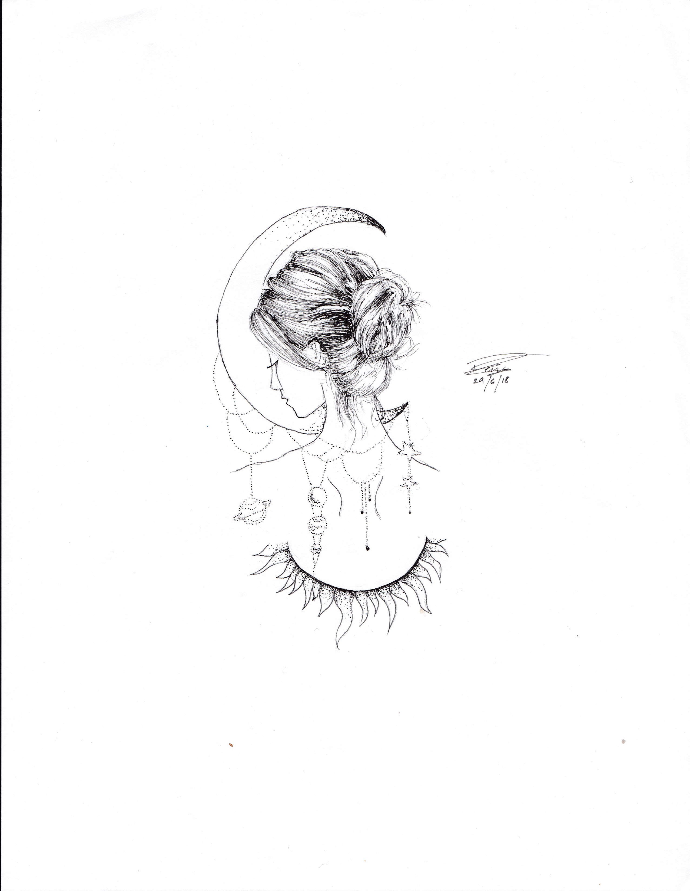
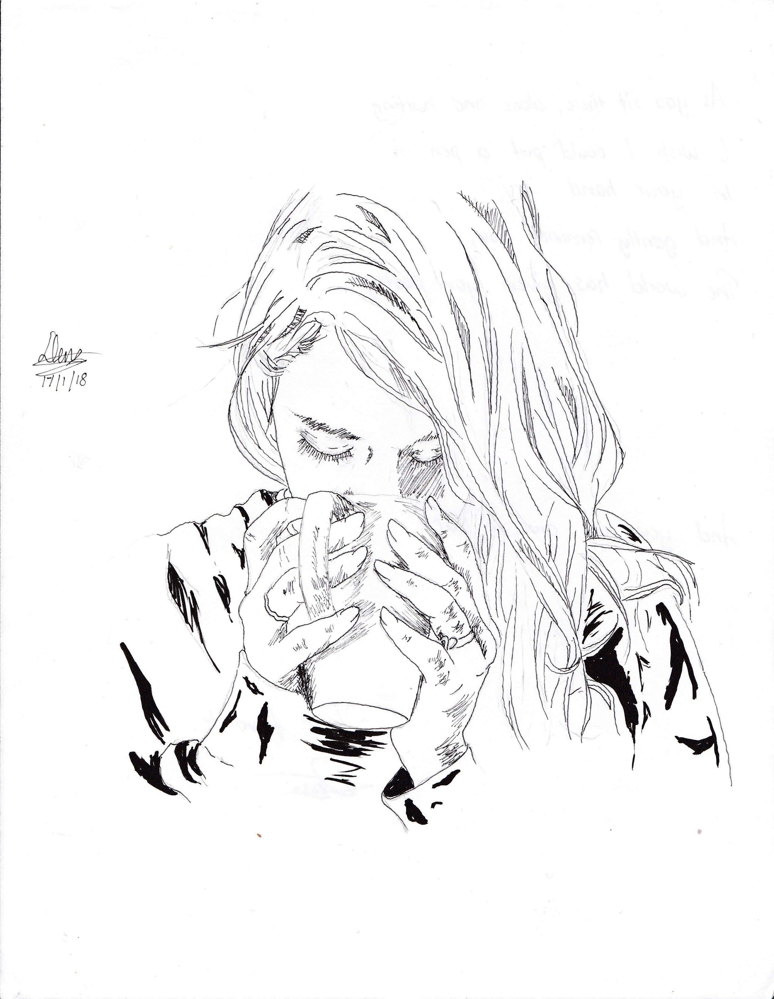

Being a Concept Artist's always been the
goal. Always.
Growing up, video games were a major
part of what shaped
my interests. Those interests carried over to my ambitions, and those ambitions are now my goals. Being able to
create different worlds out of nothing but your imagination always left me in wonder. Playing Fantasy games
like Final Fantasy and Chrono Trigger are the main inspiration for the art I work on today, with heavy influences
from artists such as Instagram personalities Josh Corpuz
and Vonnart. The result of all
those influences is a darker, more gritty feel which is the emphasis of the pieces I work on. Being able to one
day
create my own universe synonymous with my brand is where I hope to be.

I
specialize in more
static
works, 
such as
Illustrations and
landscaping. I've worked with
multiple different mediums but my main selling point is being able to put out highly detailed inked pieces with a
variety of greyscale mediums, such as ink, graphite, digital, etc. I've experimented with a variety of traditional
mediums, such as pastels, acrylics, and other types of paint, but are not my strong suit.